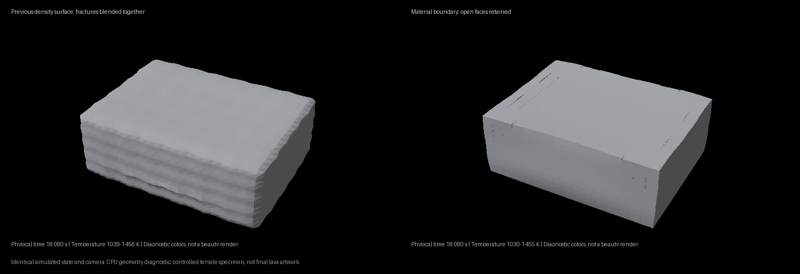

Crust and fracture diagnostics.
The upper surface now cools into crust while the underside stays mostly molten. A controlled tensile test breaks that crust, and the exported geometry keeps the open fracture faces.
This is a CPU mechanism proof, not finished lava.
The test uses explicit end grips. It does not establish natural flow breakup or the final basalt appearance. The finer-timestep test still changes the motion and loading work substantially. Production rendering remains blocked.

The same particles, state and camera. The density surface blends the cracks together; the material boundary preserves them.1164 KUpper surface after cooling
966Broken upper-crust bonds in load test
0Broken basal bonds
1.06%Exported volume difference
Changes and evidence
- Replaced the fracture-blind density export with locally connected material domains. Closed cracks add no line; open cracks retain their faces and remain attached at connected tips.
- Removed the 95% tensile-damage cutoff that could prevent the later bond-release criterion from being reached.
- New flow setups use 1 × 1 × 0.5 mm cells and a hot lower reservoir. Previous caches retain their original settings and are not relabeled.
- Inlet births now have unique material coordinates. Fragment identity is an integer attribute, separate from solid fraction.
- Resolved creases keep separate shading normals. No decorative crack pattern or pore displacement was added.
- 28 focused CPU checks pass. This count does not establish visual quality or convergence.
The surface still has grid-scale facets. The next production case needs resolved natural breakup and a successful material review. These images should not be mistaken for that result.